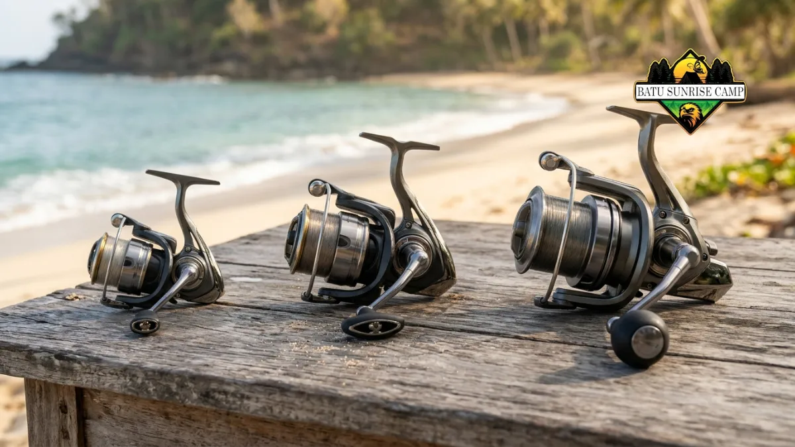

Joran dan reel untuk memancing di pantai sebaiknya berjenis spinning, berpanjang sekitar 2,4 hingga 3,0 meter, berukuran reel menengah, serta tahan karat air asin.
- Joran spinning dan reel spinning adalah kombinasi paling mudah untuk pemula di pantai.
- Panjang joran memengaruhi jarak lempar, sedangkan aksi joran memengaruhi kepekaan dan tenaga.
- Ukuran reel perlu seimbang dengan joran dan senar agar lemparan dan perlawanan ikan terkendali.
- Bahan anti karat dan segel yang baik menentukan umur pakai di lingkungan air asin.
- Perawatan dengan air tawar setelah pemakaian menjaga reel tetap halus.
Mengapa Pilihan Joran dan Reel Sangat Memengaruhi Hasil Memancing di Pantai?
Joran dan reel menentukan jarak lemparan, kemampuan merasakan gigitan, dan daya tahan alat terhadap air asin, sehingga keduanya menjadi komponen paling berpengaruh dalam paket memancing pantai.
Memancing dari pantai berarti pemancing tidak bisa mendekati ikan dengan kapal. Umpan harus dilempar melewati ombak pecah ke area tempat ikan mencari makan. Karena itu, panjang joran, kekuatan joran, dan kelancaran reel menjadi faktor utama.
Menurut American Sportfishing Association (ASA) dalam 2026 Special Report on Fishing, total kunjungan memancing di Amerika Serikat naik 3 persen menjadi 918 juta kali pada 2025.
Angka ini menunjukkan banyak orang memancing berulang kali, sehingga perlengkapan yang awet dan nyaman dipakai menjadi kebutuhan nyata, bukan sekadar pilihan.
Pada camping pantai, peralatan terkena pasir, angin, dan percikan air laut sepanjang hari. Joran dan reel yang tidak dirancang untuk kondisi ini lebih cepat rusak. Pemilihan awal yang tepat menghemat biaya perbaikan dan penggantian.
Joran Seperti Apa yang Cocok untuk Memancing di Pantai?
Joran spinning dua bagian berpanjang sekitar 2,4 hingga 3,0 meter dengan aksi menengah umumnya cocok untuk memancing di pantai karena seimbang antara jarak lempar dan kemudahan dibawa.
Joran adalah batang yang menyalurkan tenaga lemparan dan gigitan ikan. Beberapa aspek perlu dinilai sebelum membeli.
Berapa Panjang Joran yang Ideal untuk Pantai?
Panjang joran yang ideal untuk memancing di pantai biasanya berkisar antara 2,4 hingga 3,0 meter, mengingat joran dengan ukuran lebih panjang memungkinkan jarak lemparan yang lebih jauh melampaui zona ombak yang pecah.
Joran sekitar 2,4 meter lebih mudah dikendalikan pemula dan lebih ringan dibawa. Joran sekitar 3,0 meter memberi jarak lempar lebih jauh, tetapi terasa lebih berat dan membutuhkan teknik lemparan lebih baik. Pantai berpasir yang landai dengan ombak pecah jauh biasanya diuntungkan oleh joran lebih panjang.
Apa Arti Aksi dan Kekuatan Joran?
Aksi joran menunjukkan seberapa jauh batang melengkung, sedangkan kekuatan menunjukkan beban lemparan atau senar yang sesuai, sehingga keduanya perlu cocok dengan umpan dan pemberat.
Aksi cepat melengkung di ujung dan peka terhadap gigitan. Aksi lambat melengkung hingga pangkal dan lebih lentur. Aksi menengah menjadi kompromi yang aman bagi pemula.
Periksa rentang pemberat atau bobot umpan yang tertera pada joran dan jangan melampauinya agar joran tidak patah.
Apakah Joran Sambungan Lebih Baik daripada Joran Satu Bagian?
Joran sambungan lebih praktis untuk camping karena dapat dilipat menjadi bagian pendek, sedangkan joran satu bagian umumnya lebih peka tetapi sulit diangkut.
Camping pantai biasanya melibatkan kendaraan atau tas ransel dengan ruang terbatas. Joran dua atau tiga bagian muat dalam tabung atau tas panjang.
Pastikan sambungan terpasang rapat sebelum dipakai dan bersihkan pasir dari sambungan agar tidak aus.
Reel Ukuran Berapa yang Cocok untuk Memancing di Pantai?
Reel spinning ukuran menengah, yang umumnya berada pada kelas 3000 hingga 5000, cocok untuk memancing di pantai karena menampung senar cukup banyak dan memiliki tenaga tarik memadai.
Ukuran reel menunjukkan kapasitas senar dan kekuatan gigi internal. Reel terlalu kecil cepat kehabisan senar saat ikan menarik jauh.
Gulungan yang berukuran terlalu besar memberikan kesan berat dan menciptakan ketidakseimbangan ketika dipasangkan dengan joran yang ringan.

Perbandingan ukuran reel spinning dari kelas kecil hingga besar membantu memahami kapasitas senar dan keseimbangan dengan joran untuk memancing di pantai.
Apa Fungsi Drag pada Reel?
Drag adalah rem pada reel yang mengatur seberapa kuat ikan dapat menarik senar, sehingga senar tidak putus ketika ikan melawan dengan tenaga besar.
Atur drag agar tidak terlalu kencang dan tidak terlalu longgar. Pada pantai berkarang, drag yang halus membantu mencegah senar putus. Periksa drag sebelum memancing dan bersihkan dari pasir setelahnya.
Seberapa Penting Rasio Gigi Reel?
Rasio gigi menunjukkan berapa putaran spool untuk satu putaran handle, sehingga rasio rendah memberi tenaga tarik lebih kuat dan rasio tinggi menarik senar lebih cepat.
Pemula umumnya cukup dengan rasio menengah yang seimbang. Rasio tinggi berguna ketika menarik umpan buatan atau mengejar ikan yang berenang ke arah pemancing.
Bagaimana Menyeimbangkan Joran, Reel, dan Senar?
Seimbangkan joran, reel, dan senar dengan memastikan ukuran reel sesuai joran, kekuatan senar cocok dengan rentang joran, dan titik berat rangkaian terasa nyaman di tangan.
Rangkaian yang tidak seimbang cepat melelahkan, terutama ketika memancing berjam-jam. Berikut pedoman praktisnya.
- Pilih joran sesuai teknik dan kondisi pantai.
- Pilih reel yang sepadan dengan joran, bukan lebih berat dari joran.
- Pasang senar dengan kekuatan sesuai rentang yang ditulis pada joran.
- Uji rangkaian dengan lemparan beberapa kali sebelum memancing lama.
Pantai berpasir cocok memakai senar monofilamen yang lentur, sedangkan pantai berkarang cocok memakai leader yang lebih tahan gesek.
Bagaimana Cara Memilih Joran dan Reel yang Tahan Air Asin?
Pilih joran dan reel dengan komponen anti karat, segel rapat, dan pelapis kuat, lalu bilas dengan air tawar setelah dipakai agar garam tidak merusak bagian dalam.
Air asin mempercepat korosi pada logam. Perhatikan beberapa hal berikut sebelum membeli.
- Pemandu senar. Pilih pemandu dengan cincin keras agar senar tidak cepat aus.
- Rumah reel. Bahan tahan karat dan segel yang rapat memperlambat masuknya pasir dan air.
- Bantalan. Bantalan tahan air asin menjaga putaran tetap halus.
- Pegangan joran. Bahan busa atau gabus sintetis lebih mudah dibersihkan.
Tidak ada reel yang sepenuhnya kebal terhadap air asin. Perawatan rutin tetap diperlukan. Harga lebih tinggi tidak selalu menjamin ketahanan, sehingga baca spesifikasi produsen dan ulasan pemakai.
Bagaimana Cara Merawat Joran dan Reel Setelah Memancing di Pantai?
Rawat joran dan reel dengan membilas memakai air tawar, mengeringkan, lalu menyimpan dalam tas tertutup, karena garam dan pasir adalah penyebab utama kerusakan.
Lakukan perawatan sederhana setiap hari selama camping.
- Kendurkan drag sebelum menyimpan agar komponen tidak tertekan.
- Bilas reel dengan air tawar yang dialirkan perlahan, bukan disemprot keras.
- Lap joran dari pangkal ke ujung, lalu keringkan pemandu senar.
- Simpan joran tegak atau pada penyangga, jangan di atas pasir.
- Beri pelumas ringan pada reel sesuai petunjuk produsen setelah perjalanan selesai.
Periksa juga pemandu senar secara berkala. Retakan kecil pada cincin dapat merusak senar. Ganti senar bila terlihat lecet atau keriting.
Kesimpulan
Joran dan reel untuk memancing di pantai sebaiknya spinning, berpanjang sekitar 2,4 hingga 3,0 meter, dengan reel menengah yang seimbang. Utamakan komponen anti karat, atur drag dengan benar, dan seimbangkan joran, reel, serta senar.
Setelah dipakai, bilas dengan air tawar, keringkan, dan simpan di tempat tertutup. Langkah sederhana ini menjaga alat awet selama camping pantai berikutnya.
Untuk panduan lengkap tentang semua alat pancing yang perlu disiapkan saat camping pantai, baca artikel pillar Panduan Memilih dan Menyiapkan Alat Pancing untuk Camping di Pantai.

Pertanyaan Umum (FAQ)